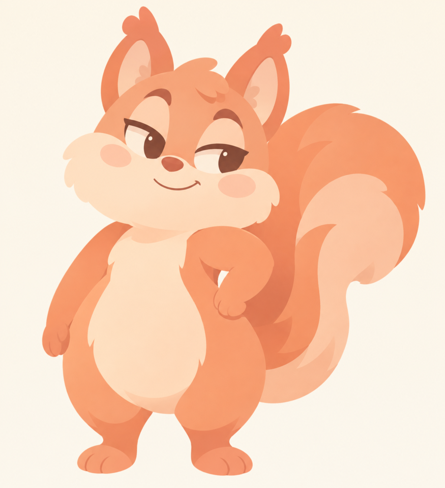
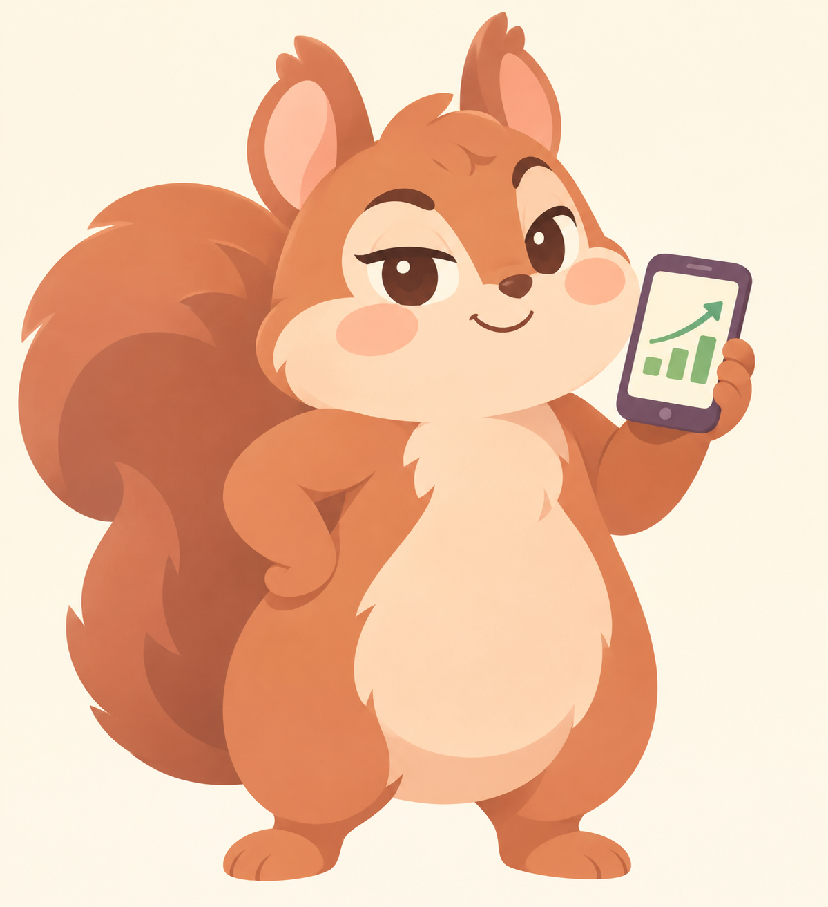
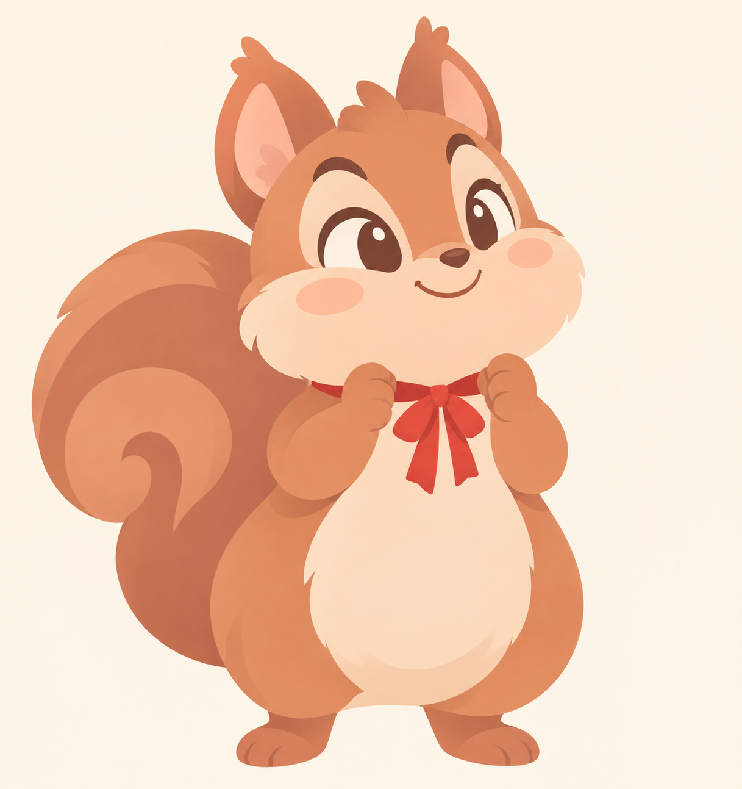
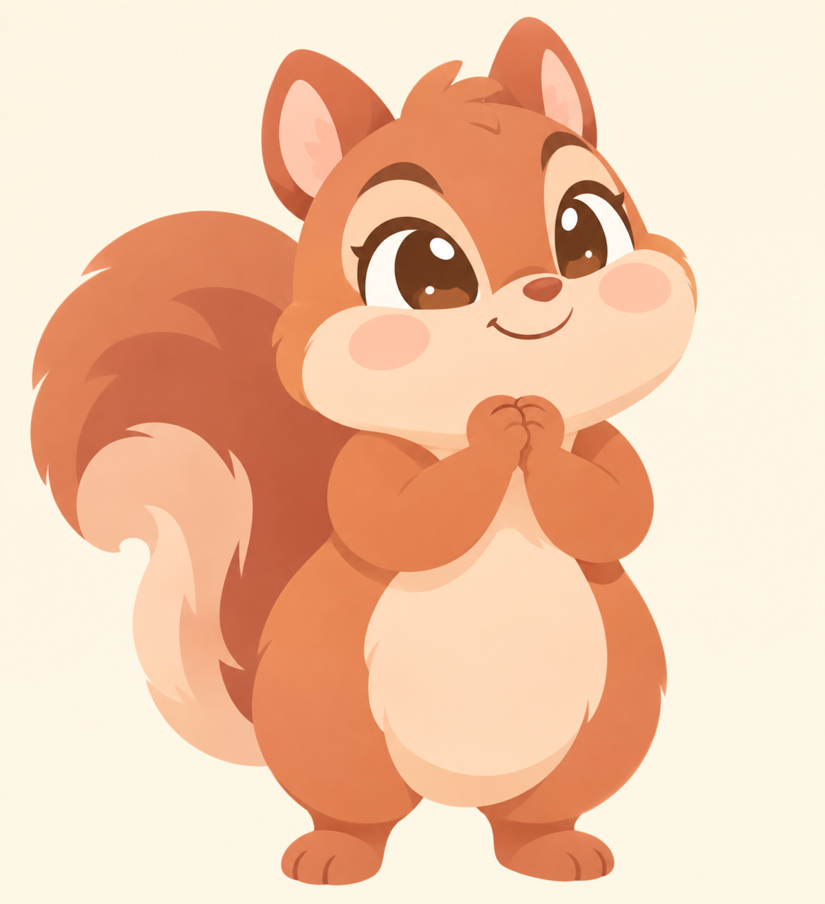

동물과 캐릭터 중간 다람쥐 시안
서서 있는 자세와 표정으로 캐릭터성을 살리고, 옷은 빼거나 최소로 줄였습니다. 동물 본래의 몸은 그대로 둔 중간 지점입니다.

옷 없이 털만 있음. 한 손을 허리에 얹은 여유로운 표정.

옷 없이 휴대폰 하나만. 차트를 보는 방치형 게임의 핵심 행동이 드러남.

포인트 소품은 목끈 하나. 눈썹을 올려 들뜬 표정.

옷 없이 두 발을 가슴에 모은 간절한 자세. 빚과 기대가 함께 보임.
고르실 때 볼 점: 동물다운 귀여움과 캐릭터성의 균형이 맞는지, 옷이나 소품이 과하지 않은지, 작은 화면에서도 읽히는지.
하나 고르면 그 자세와 소품 수준을 기본형으로 정하고, 표정 5종을 같은 몸으로 다시 뽑겠습니다.